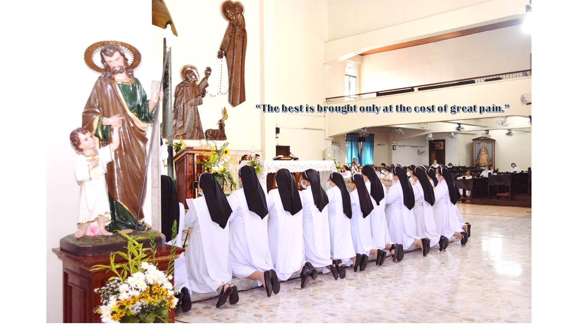
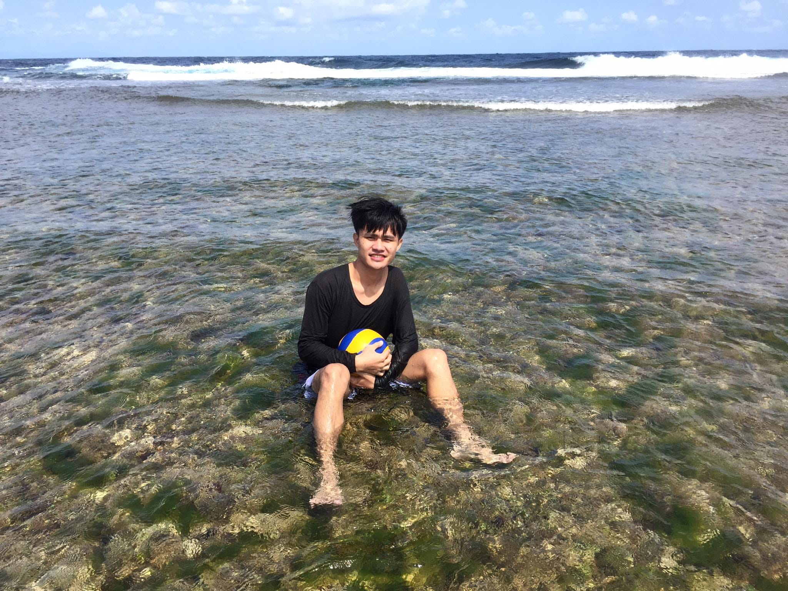

Personels
Sr. Ascension L. Domugho, O.P
SCHOOL PRINCIPAL

Sr. Jessa Corpuz
SIENAN SISTER
Sr. Savannah Bautista
SIENAN SISTER

Sir Ariston Loriamas
ACTIVITY COORDINATOR

Saint Catherine's Academy exemplifies a commitment to excellence in education and service. Through its comprehensive array of offerings, SCA seeks to inspire and empower students to reach their full potential, both as scholars and as citizens of a global community. As a beacon of educational innovation and inclusivity, SCA remains steadfast in its mission to shape the leaders and changemakers of tomorrow.
Prayer and worship serve as cornerstones of the God-centered life, offering avenues for communion with the divine. Through prayer, individuals open their hearts to God, offering gratitude for blessings received, seeking guidance in times of need, and surrendering their will to a higher purpose. Worship, whether communal or solitary, becomes a sacred expression of reverence and devotion—a testament to the profound connection between the human spirit and the divine.
In the Bible, the importance of community and fellowship is emphasized throughout both the Old and New Testaments. Hebrews 10:24-25 urges believers to "consider how we may spur one another on toward love and good deeds, not giving up meeting together, as some are in the habit of doing, but encouraging one another—and all the more as you see the Day approaching." This passage underscores the significance of community as a source of encouragement, accountability, and spiritual growth.
Throughout the Old Testament, biblical figures such as Moses, David, and Joseph epitomize servant leadership through their unwavering dedication to their people and their profound reliance on God's guidance. Moses, the liberator of the Israelites, exemplified humility and selflessness as he led his people through the wilderness, guided by a steadfast commitment to God's commandments and the welfare of his community.
the journey of the truth seeker is a deeply personal and transformative one—a journey of awakening, enlightenment, and self-realization. It is a journey that transcends dogma, doctrine, and cultural boundaries, embracing the universal quest for wisdom, understanding, and inner peace. And it is a journey that invites all who are willing to embark on the path of discovery, exploration, and growth in pursuit of truth.
As you step into the hallowed halls of SCAGI, you embark on a transformative journey marked by innovation, exploration, and discovery. Here, academic excellence intertwines seamlessly with moral integrity, as we strive to cultivate well-rounded individuals equipped to thrive in an ever-evolving world. At SCAGI, we believe in the power of education to transcend boundaries and ignite the flames of curiosity and inquiry. Our dedicated faculty, comprised of seasoned educators and mentors, foster a dynamic learning environment where students are encouraged to question, explore, and unleash their full potential.
ENROLL NOW


Grade-9 St. Lorenzo Ruiz